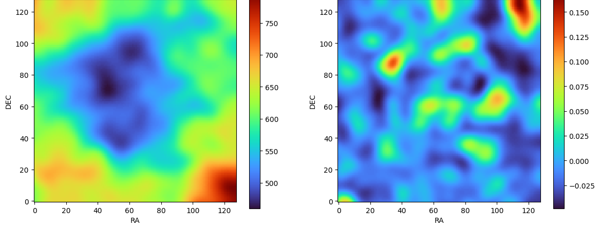

Foreground Removal of 21 cm HI signal using GPR
This work as has been a part of my internship at Indian Institute of Technology, Indore at the STARC Lab, under the supervision of Prof. Abhirup Datta.
Mentor: Samit Kumar Pal
Key Investigations:
-
Investigated the hyperfine transition of neutral hydrogen (1s ground state spin-flip) emitting 21 cm radiation, a key probe of the Epoch of Reionization (EoR) and Cosmic Dawn and the effect of foregrounds in radio observations.
-
Gaussian Process Regression (GPR) Framework: Modelling observed data using Gaussian distributions; Squared-exponential kernel for smoothness in foregrounds and non-stationary kernel to capture oscillations in 21 cm signals + noise.
-
GPymodule used to implement Gaussian Process Regression on sythetic dataset, to extract the foreground.

Outcomes & Directions:
-
Smooth foreground extracted, however remaining signal is still noisy- further work to be done to remove noise.
-
Highly sensitive to kernal choice and a different set of choices will vary the output amplitudes.
-
Requires high computational power.
Constraining Cosmological Parameters using Bayesian Inference
This project was undertaken at the Xaverian Astronomical Society, St. Xavier’s College, Kolkata, under the supervision of Dr. Suparna Roychowdhury.
Contributer: Bipasha Bhattacharjee
In this project, we investigated the estimation of key cosmological parameters - specifically the Hubble constant ($H_O$) and matter density parameter ($\Omega_m$)-within a Newtonian cosmology framework. Using a Bayesian statistical approach, we implemented a Gaussian likelihood and uniform priors, and performed Markov Chain Monte Carlo (MCMC) sampling. The results yield constraints consistent with established cosmological observations and demonstrate the power of Bayesian inference in parameter estimation for cosmology.